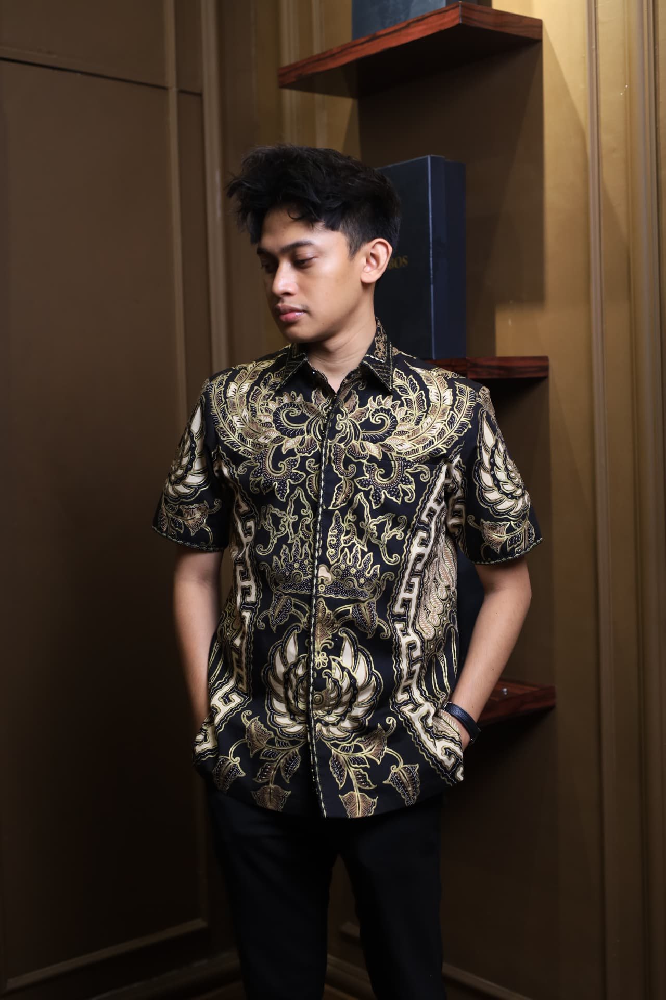
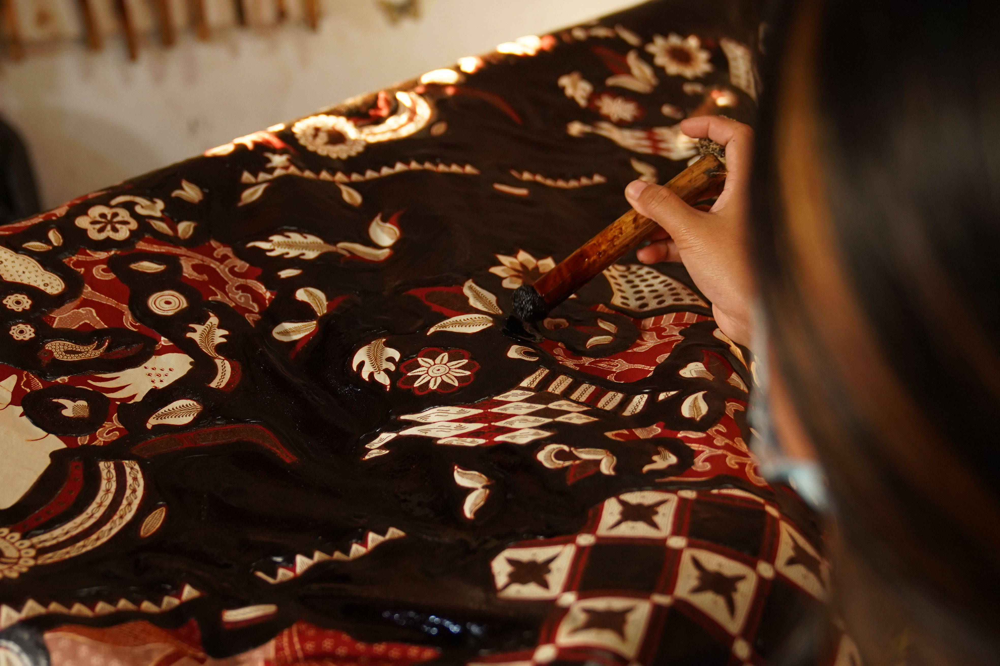
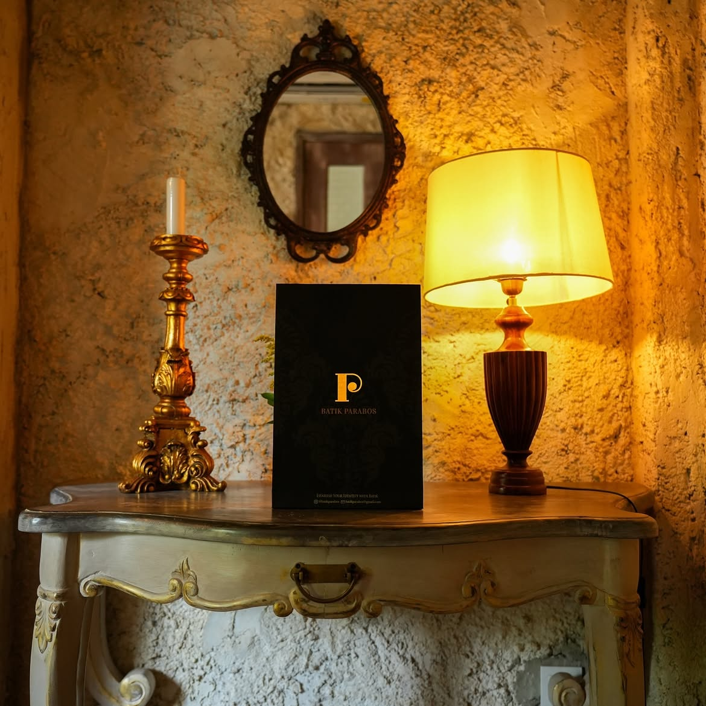

Where tradition
becomes
character.
Discover the craft behind every piece — Indonesian heritage reimagined for those who wear their identity with intention.
It begins
with cloth.
Every piece begins before the pattern, before the wax, before the dye. It begins with a length of Cotton Primissima — a weave so fine it drinks colour like skin drinks light. The cloth is everything.
Read Our Heritage
Five stages.
One garment.
Scroll to move through the transformation.
Cloth Preparation
Cotton Primissima is washed, boiled, and sun-dried to remove starch and impurities. Only cloth that passes our hand-feel test proceeds. This stage takes a full day. It cannot be rushed.
Pattern Transfer
Traditional motifs — Kawung, Parang, Mega Mendung — are transferred by hand onto the cloth surface using pencil guides. Each line is intentional. No digital projection is used.
Wax Application
Hot wax is applied with a stamp (cap) or a hand tool (canting). The wax forms a resist barrier, defining which areas will remain undyed in the final garment. This is where the motif becomes real.
Natural Dyeing
We dye in sequence — light tones first, building depth through successive dye baths. Each dip is timed by experience, not a clock. Sogan earth tones. Indigo depth. Slow colour.
Finishing & Tailoring
Wax is removed by boiling. The cloth is pressed, inspected, and cut to our patterns by our in-house tailors. Each garment is signed before it leaves the atelier.
Full Heritage StoryThe Parabos Philosophy
Where Indonesian
tradition meets
contemporary form.
Batik is not merely a pattern. It is a language — one spoken by the artisan's hand in wax and dye, across metres of cloth, over hours that become days. At Parabos, we honour that language while giving it a new vocabulary for the modern wardrobe.
Discover Our Heritage
The details
matter.
Every edge, every join, every finishing stitch is considered. We do not produce garments at volume. We produce pieces — each one inspected before it leaves the atelier.
Now that you know
the craft — discover the pieces.
Step Inside
Visit the
Atelier.
Beyond the digital experience, Batik Parabos maintains a private physical atelier in Surakarta. By appointment, you may visit to view the full collection, commission a bespoke piece, or simply experience the craft firsthand.
Private Viewing
Collection viewing by appointment.
Craft Experience
Guided batik-making session.
Bespoke Consultation
Custom garment from scratch.
Fitting & Alterations
In-house tailoring consultation.
In every
piece.
Each garment carries the full weight of the process you've just witnessed. Find the one that speaks to you.